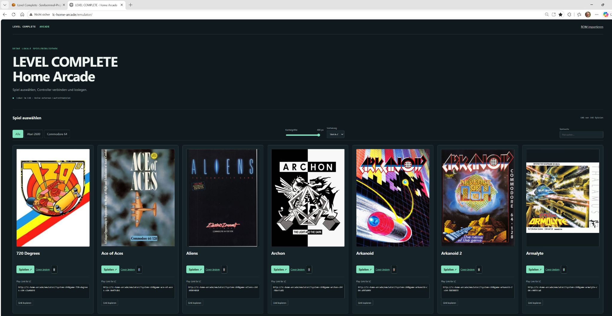
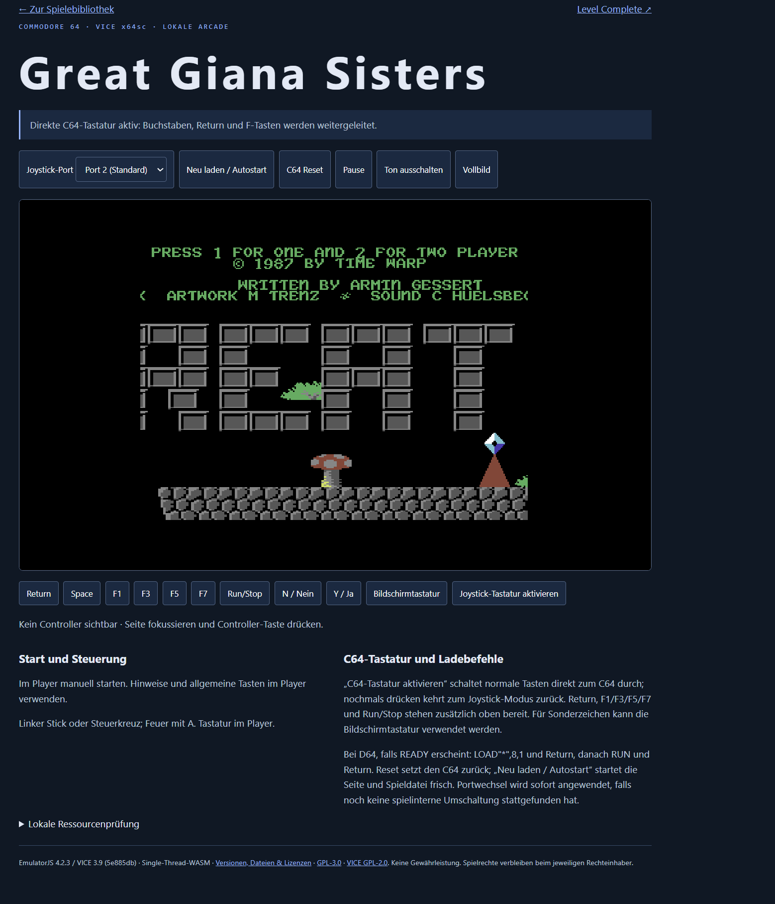
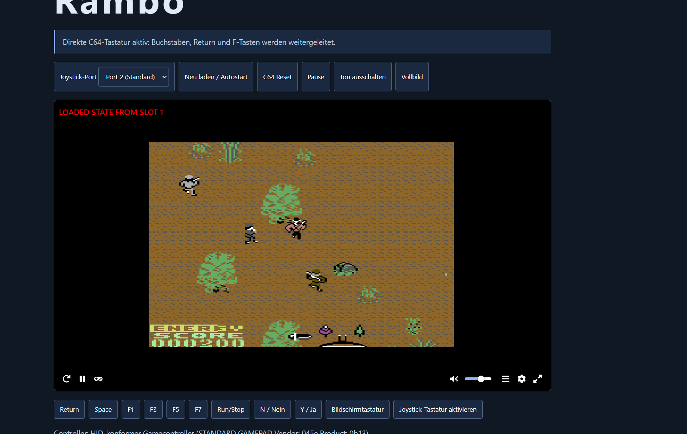
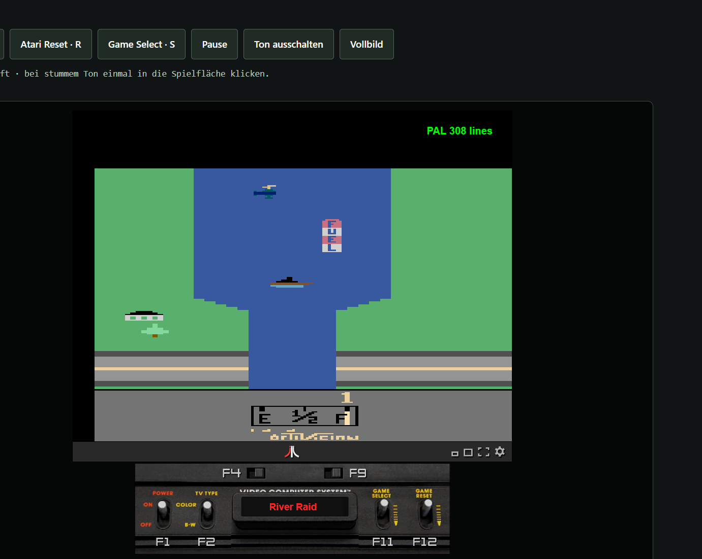
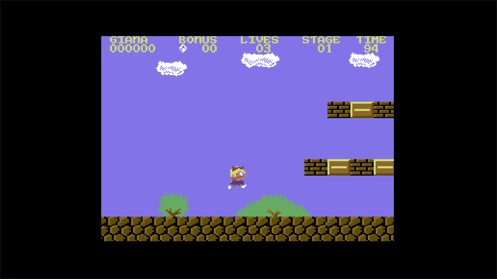
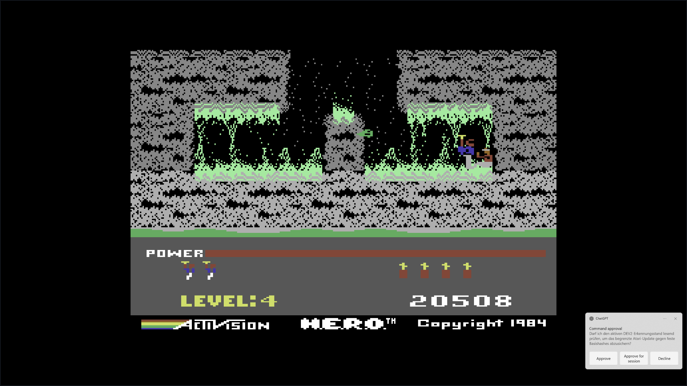
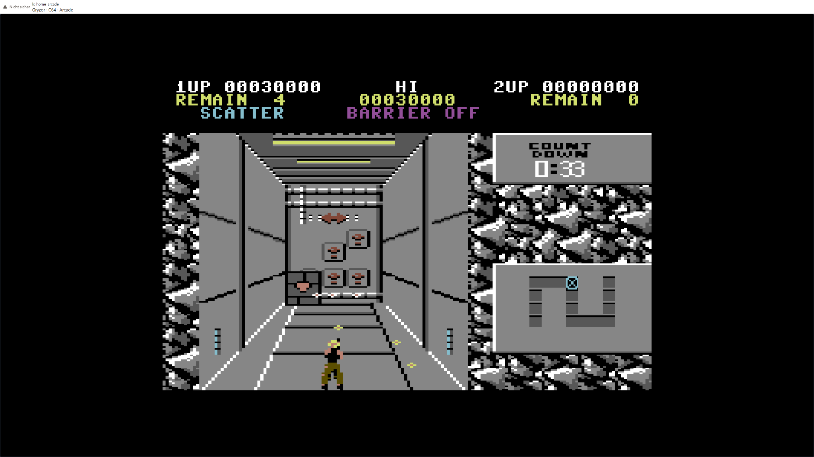
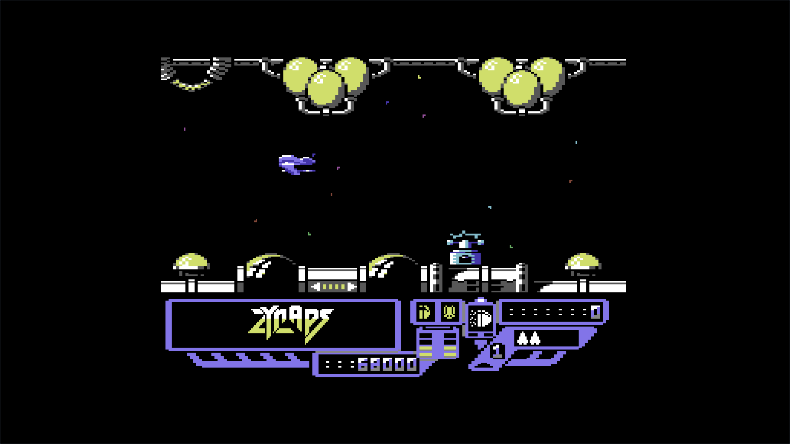

Level Complete –
Home Arcade
Retro spielen. Im eigenen Browser.

Hinter dem Projekt.
Home Arcade ist ein privates, lokal betriebenes Browser-Retroprojekt für Atari 2600 und Commodore 64. Eine Spielebibliothek und ein eigenes Emulator-Frontend bringen die Klassiker in eine gemeinsame Oberfläche.
Controllerunterstützung gehört zum Projekt und verbindet das Spielen im Browser mit dem vertrauten Konsolengefühl.
Merkmale & Einblicke.
- Atari 2600 und Commodore 64
- Spielebibliothek für die lokale Sammlung
- Eigenes Emulator-Frontend im Browser
- Controllerunterstützung zum Spielen am Gamepad
Ein privates Arcade-Zuhause.
Diese statische Seite stellt das Projekt vor. Home Arcade ist kein öffentlich spielbares ROM-Portal. Hier werden weder Spiele gestartet noch ROM-Dateien zum Spielen oder Herunterladen angeboten.
Bibliothek & Klassiker.
Die ersten beiden Aufnahmen zeigen die Emulator-Seiten im Browser mit Spielbild, Bedienelementen und Spielhinweisen. Danach folgen die Atari-2600-Ansicht und weitere Spielszenen. Vom Nutzer bereitgestellte Originalaufnahmen aus Home Arcade. Alle gezeigten Oberflächen und Schaltflächen sind Teil statischer Bilder. Hier wird keine Anwendung gestartet. Bild auswählen zum Vergrößern.













